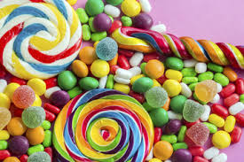
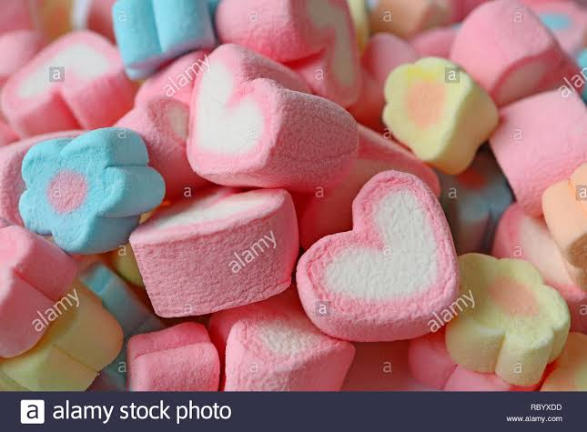
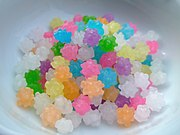
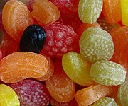
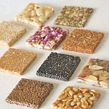
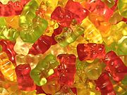
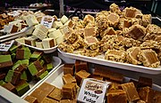
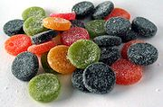
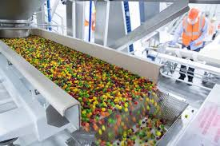

History of Candy
Candy has its origins mainly in Ancient India. Between the 6th and 4th centuries BCE, the Persians, followed by the Greeks, discovered the people in India and their "reeds that produce honey without bees". They adopted and then spread sugar and sugarcane agriculture.Sugarcane is indigenous to tropical South and Southeast Asia, while the word sugar is derived from the Sanskrit word Sharkara.Pieces of sugar were produced by boiling sugarcane juice in ancient India and consumed as Khanda, dubbed as the original candy and the etymology of the word.
Before sugar was readily available, candy was based on honey.Honey was used in Ancient China, Middle East, Egypt, Greece and the Roman Empire to coat fruits and flowers to preserve them or to create forms of candy.Candy is still served in this form today, though now it is more typically seen as a type of garnish.
Before the Industrial Revolution, candy was often considered a form of medicine, either used to calm the digestive system or cool a sore throat. In the Middle Ages candy appeared on the tables of only the most wealthy at first. At that time, it began as a combination of spices and sugar that was used as an aid to digestive problems. Digestive problems were very common during this time due to the constant consumption of food that was neither fresh nor well balanced.Banquet hosts would typically serve these types of 'candies' at banquets for their guests. One of these candies, sometimes called chamber spice, was made with cloves, ginger, aniseed, juniper berries, almonds and pine kernels dipped in melted sugar.
The Middle English word candy began to be used in the late 13th century.
The first candy came to America in the early 18th century from Britain and France. Only a few of the early colonists were proficient in sugar work and sugary treats were generally only enjoyed by the very wealthy. Even the simplest form of candy – rock candy, made from crystallized sugar – was considered a luxury.


Classification
Sugar candies include hard candies, soft candies, caramels, marshmallows, taffy, and other candies whose principal ingredient is sugar. Commercially, sugar candies are often divided into groups according to the amount of sugar they contain and their chemical structure.
Comparison of sugar candies






Konpeitō is a traditional Japanese sugar candy. When finished, it is almost 100% solid sugar.
Fruit-shaped hard candy is a common type of sugar candy, containing sugar, color, flavor, and a tiny bit of water.
Chikki are homemade nut brittles popular in India. Between the nuts or seeds is hard sugar candy.
German Haribo gummy bears were the first gummi candy ever made. They are soft and chewy.
Fudge is a type of sugar candy that is made by mixing and heating sugar, butter and milk.
Pantteri is a soft, chewy Finnish sugar candy. The colored ones are fruity, while black are salmiakki (salty liquorice-flavored).
Cultural Significance
Candy is the source of several cultural themes:
1- Adults worry that other people will use candy to poison or entice children into harmful situations. Stranger danger warnings include telling children not to take candy from strangers, for fear of the child being abducted. Poisoned candy myths persist in popular culture, especially around trick-or-treating at Halloween, despite the rarity of actual incidents.
2- The phrase like taking candy from a baby is a common simile, and means that something is very easy to do.
3- A 1959 Swedish dental health campaign encouraged people to reduce the risk of dental problems by limiting consumption of candy to once a week. The slogan, "All the sweets you want, but only once a week", started a tradition of buying candy every Saturday, called lördagsgodis (literally "Saturday candy").
The candy business underwent a drastic change in the 1830s when technological advances and the availability of sugar opened up the market. The new market was not only for the enjoyment of the rich but also for the pleasure of the working class. There was also an increasing market for children. While some fine confectioners remained, the candy store became a staple of the child of the American working class. Penny candies epitomized this transformation of candy. Penny candy became the first material good that children spent their own money on. For this reason, candy store-owners relied almost entirely on the business of children to keep them running. Even penny candies were directly descended from medicated lozenges that held bitter medicine in a hard sugar coating.
In 1847, the invention of the candy press (also known as a toy machine) made it possible to produce multiple shapes and sizes of candy at once. In 1851, confectioners began to use a revolving steam pan to assist in boiling sugar. This transformation meant that the candy maker was no longer required to continuously stir the boiling sugar. The heat from the surface of the pan was also much more evenly distributed and made it less likely the sugar would burn. These innovations made it possible for only one or two people to successfully run a candy business.
Sales
Global sales of candies were estimated to have been approximately US $118 billion in 2012.
Because each culture varies in how it treats some foods, a food may be a candy in one place and a dessert in another. For example, in Western countries, baklava is served on a plate and eaten with a fork as a dessert, but in the Middle East, Northern Africa, and Eastern Europe, it is treated as a candy.
Paking
Packaging preserves aroma and flavor and eases shipping and dispensation. Wax paper seals against air, moisture, dust, and germs, while cellophane is valued by packagers for its transparency and resistance to grease, odors and moisture. In addition, it is often resealable. Polyethylene is another form of film sealed with heat, and this material is often used to make bags in bulk packaging. Plastic wraps are also common. Aluminum foils wrap chocolate bars and prevent a transfer of water vapor while being lightweight, non-toxic and odor proof. Vegetable parchment lines boxes of high-quality confections like gourmet chocolates. Cardboard cartons are less common, though they offer many options concerning thickness and movement of water and oil.
Packages are often sealed with a starch-based adhesive derived from tapioca, potato, wheat, sago, or sweet potato. Occasionally, glues are made from the bones and skin of cattle and hogs for a stronger and more flexible product, but this is not as common because of the expense.
Production
Sugar candy is made by dissolving sugar in water or milk to form a syrup, which is boiled until it reaches the desired concentration or starts to caramelize. Candy comes in a wide variety of textures, from soft and chewy to hard and brittle. The texture of candy depends on the ingredients and the temperatures that the candy is processed at.
